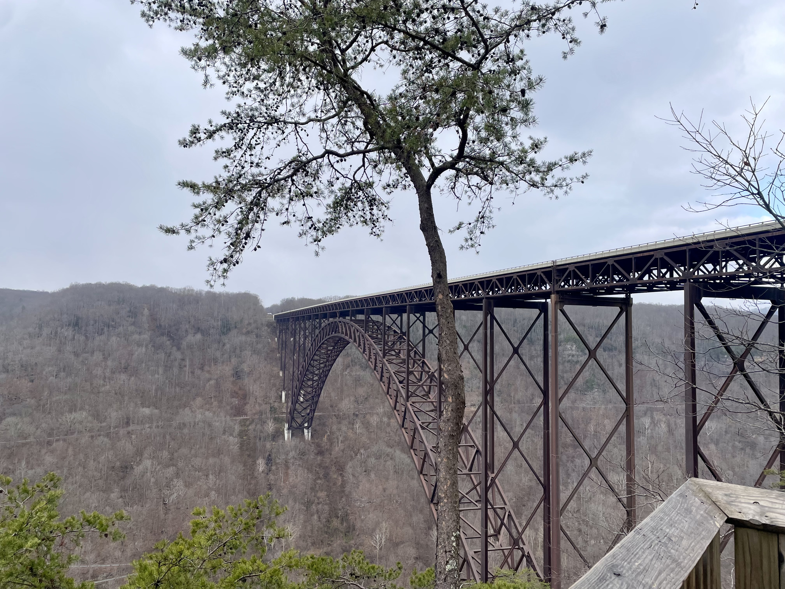
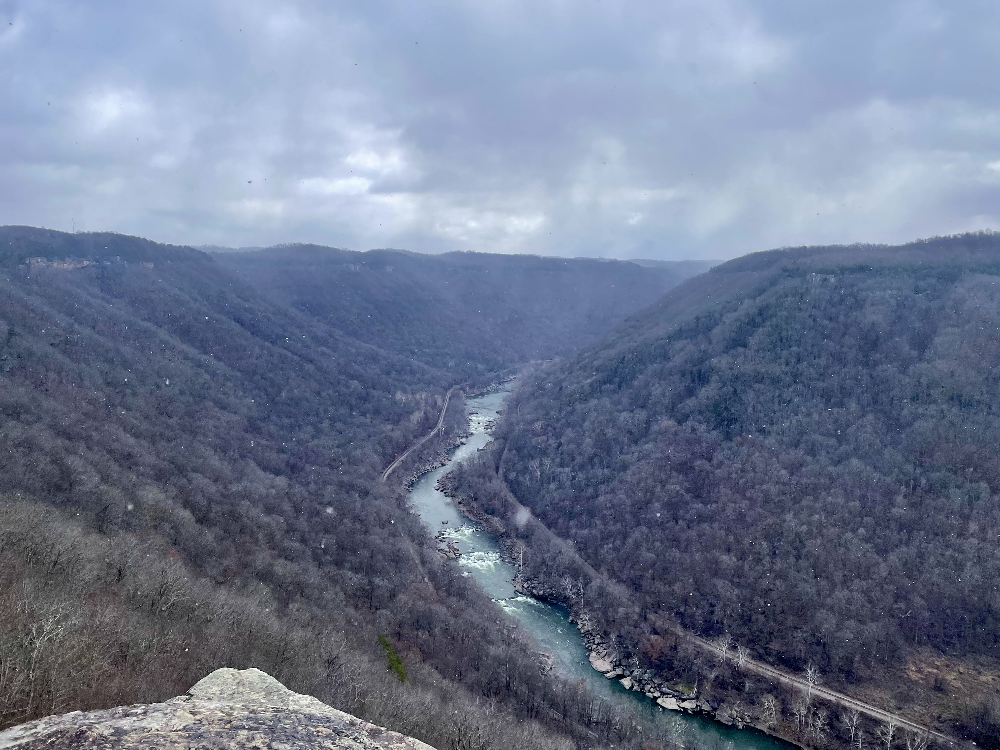
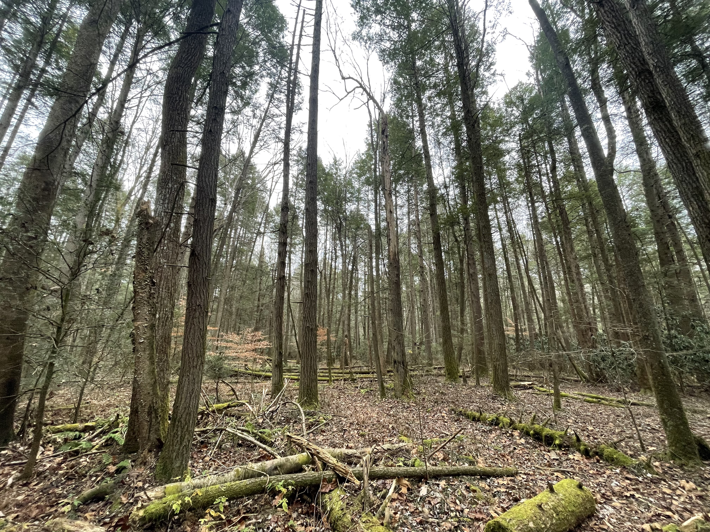
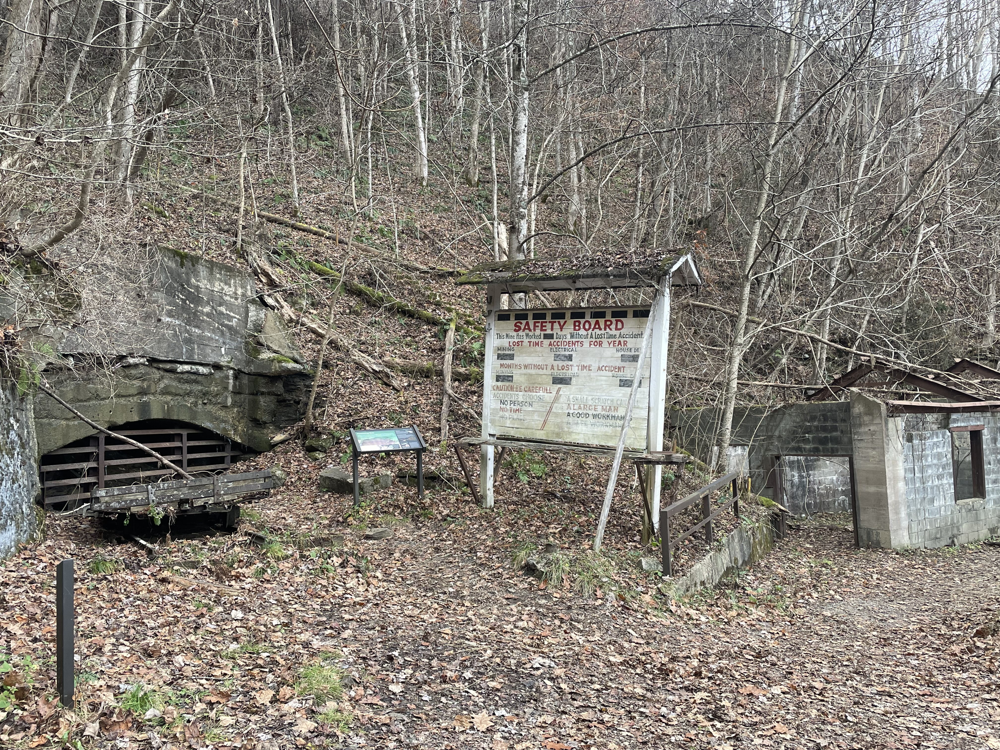
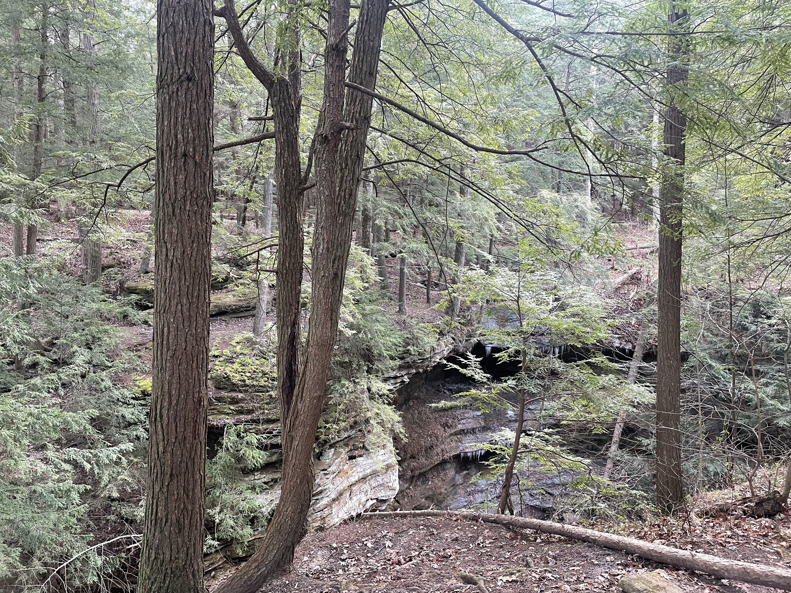
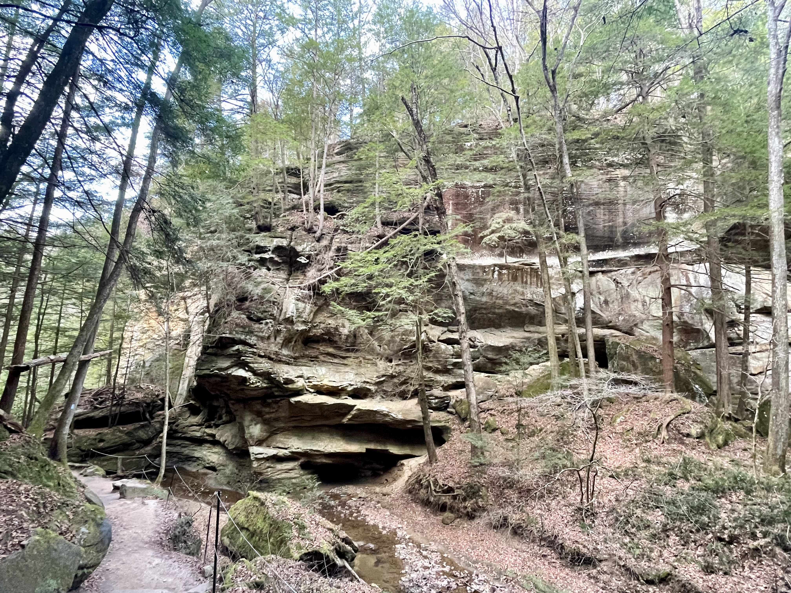
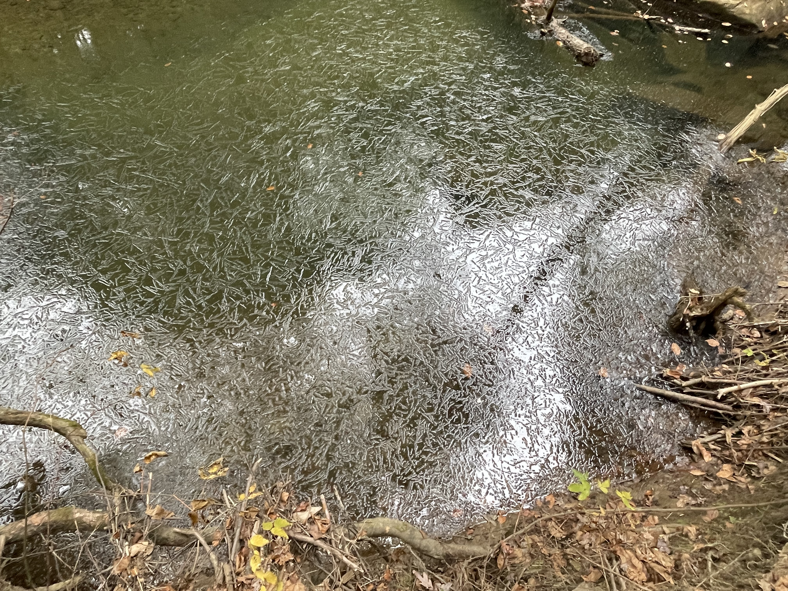
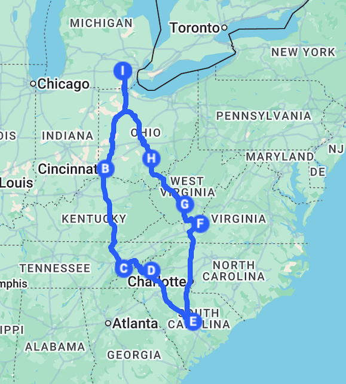

And the Snow Falls
July 2026; translated and revised from the original Chinese version from December 2025
The past is never dead. It’s not even past.
— William Faulkner, Requiem for a Nun
Memory
On the second day after the journey ended, I sat down at my desk. Outside, the snow had been falling all night, dense and uninterrupted. It descended with an excessive quietness, swallowing the road and the roofs, erasing the distance. It was because of the snow, perhaps, that the crossing of those eight states felt so suddenly distant, as if the miles had been traveled years ago, on a continent I no longer inhabited.
My luggage sat untouched by the door, but already I could feel the memory slowly receding from the center of my consciousness towards its margins, like a tide drawing back. I knew I had to begin writing at once, hoping to salvage a few fragments before they froze over. I had always believed that memory was fluid only while it remained unstated; once stated, its contours congeal, and its wild, unfixed reality is lost. Why, then, should I risk this?
Perhaps because that very fluidity carries an unease of its own. If I do not write, the memories will vanish; if I do write, they will be altered. But I know that all recollections, clear or obscure, eventually sink into the same dark sea. That sea has no boundaries or floor; it merely takes in and casts back the remnants of images: mountain roads, curtains of rain, lights, unfamiliar cities, damp mornings...
Rain came surging from every direction, turning the windshield into a wall of white foam. It blinded my vision completely, leaving only the loud, continuous sound of the downpour, like a radio tuned to dead static. The wipers swung back and forth in vain, cutting brief, temporary slits into the water. Behind the blades, a faint ring of froth bubbled, looking less like water and more like a chemical solution beginning to boil. Then the Detroit skyline came into view through the mist, dominated by the immense towers of the Renaissance Center rising from the waterfront. It didn't look like it was built on the earth at all. It looked suspended above the dark waters—its smooth glass and cold metal columns held up by some invisible field of force.
Once inside, the sound of the rain was instantly cut off, as if someone had sucked all the air out of the world. The elevator began to ascend. I was completely alone in the metal chamber, watching the overhead fluorescent light tremble. When the doors slid open at my floor, I hesitated, suddenly stripped of any certainty that the world outside this elevator was the same one I had left. At the end of a long corridor stood a heavy wooden door bearing a small sign: Consolato d’Italia. Inside, the visa interview took place in total silence. Swift, mechanical, and entirely stiff.
When I came out of the building, the rain had slackened, leaving only low, gloomy clouds pressing down over the city. A cold wind whipped through the concrete openings at the foot of the towers.
By noon I was driving back to Ann Arbor. Under the gray sky, the rain had thinned into a fine, directionless drizzle. The road looked emptied of intention. Detroit receded behind me without quite disappearing, as if the rain had not erased the city but merely pushed it farther back into a less accessible layer of the day.
At home, my luggage remained half-packed near the door. A wet coat hung from the back of a chair. The keys lay on the table with the dull brightness of objects waiting to be used. It was the eve of Thanksgiving, and P and I were about to leave for Knoxville, the first stop of our journey across eight states. I was, at the moment, caught in a heaviness I could not name. I was not tired, nor was I sad; rather, I felt a stagnant languor, a gray numbness that refused to be dispelled or ignored, like air that had been trapped too long inside a closed room. In the short interval before departure, while the drizzle continued to gather soundlessly on the glass, I found myself entertaining an almost superstitious hope: that the trip might tear open a narrow fissure in that listless stillness.
For the first few hours, at least, this proved true. Not long after the car left the city limits, the rain had lost the will to continue. Yet the sunlight did not come; the earth looked like a photograph that had just been wiped clean but still retained traces of water. The grey-white clouds broke into fragments of uneven size, slowly pushed across the air by the wind.
By the time we crossed from Michigan into Ohio, the world had brightened, though the day had already entered that imperceptible stage of decline. I have always thought that these quiet transitions are among the strangest things in nature. They are not as explicit as gales or winter storms, yet they accomplish, in a slow and covert manner, a total transfer of power from the ceding day to the night. It was precisely such a subtle turning that Emily Dickinson put forth in the poem:
Further in Summer than the Birds
Pathetic from the Grass
A minor Nation celebrates
It’s unobtrusive Mass
No Ordinance be seen
So gradual the Grace
A gentle Custom it becomes
Enlarging Loneliness
Antiquest felt at Noon
When August burning low
Arise this spectral Canticle
Repose to typify
Remit as yet no Grace
No furrow on the Glow,
But a Druidic Difference
Enhances Nature now
It takes an effort of attention to notice this turning, whether it is the seasonal transition from summer to autumn—Dickinson’s August burning low—or a bright afternoon sliding into evening. The alteration makes no sound; it just fills the air with a ceremonial stillness, and the hour becomes weighted by an antiquest feeling. The change does not belong to any single object in the landscape, but to perception itself. It is a shift that rises like a ghost, a spectral canticle—a phrase Takemitsu would later choose as the title for his own symphonic poem. It is precisely this kind of threshold that produces the uncanny sensation of witnessing the disappearance of the present world while secretly glimpsing whatever continues in its absence. When Dickinson wrote these lines, she stood at the invisible border between two seasons. We, too, were moving across a border, driving through a dusk that belonged to neither day nor night.
South of Toledo, the trees along the highway grew sparser and were gradually replaced by weeds that assumed an almost sickly green. Abandoned warehouses and blank billboards stood as the quiet remnants of an industrial past that had long since departed. By the time we reached Cincinnati, only a smear of milky yellow light remained at the horizon. We met Andrew, a friend of P’s from high school, in a dimly lit Thai restaurant. Our dinner conversation was mostly unanchored: anecdotes about old classmates, things Andrew had recently seen at med school, and the inexplicable closeness he and P—both natives here—still felt toward these streets.
When we left the city, night had fully fallen. The damp air outside the restaurant was quickly carried off by the wind. We continued south into the interior of Kentucky. As the city lights shrank in the rearview mirror, the landscape retreated into a more primitive darkness. The trees and hills on either side of the road were compressed into overlapping shadows, their contours rising and falling elusively when the headlights swept past them. At first I thought this undulating movement was merely an illusion produced by fatigue; but as the highway began to climb, the shadows grew denser, until the dark seemed to press closely against the glass.
Conversation inside the cabin gradually thinned. The words dissolved halfway through, gently swallowed by the dark before they could reach the other person, leaving only the steady, low murmur of the engine.
Near the Tennessee border, the suffocating darkness suddenly gave way and the landscape opened. The highway widened into the approach of a city, its signs blinking through the gloom. We reached Knoxville shortly after ten, where the air felt surprisingly soft, having lost the frozen edge of the north.
The hotel lights were dim, the curtains in the room were drawn tightly, and the air carried a lingering smell of old wood. As I lay on the bed, the events of the day began to blur, and I drifted into a deep sleep.
The Great Smoky Mountains
I woke a little after six. For breakfast I ate a few bites of eggs and sausage, and a dry, over-toasted muffin. It was neither good nor bad, but it kept my stomach from being empty. After that, we drove toward Great Smoky Mountains National Park, which was about an hour and a half away.
The Great Smoky Mountains are part of the Appalachian range, one of the oldest mountain systems on earth. They began forming about 480 million years ago—earlier than the first trees on land, which appeared roughly 350 million years ago, and far earlier than Saturn’s rings, which formed in outer space only between ten and one hundred million years ago. What the Appalachians have witnessed is not the cycle of human civilization or even the cycle of life. For them, the scale of time has long exceeded the bounds of natural history and belongs instead to a constant, indifferent cosmic order.
Many parts of the American South once depended on these mountains: first on timber, then on coal, and afterward on almost nothing at all. Over the past century, the settlements flanking the Great Smokies passed through a brief, violent prosperity before collapsing into decline. People gathered here by the thousands for the mines, then left hurriedly when the seams ran dry, leaving behind hollowed-out valleys, empty frame houses, and sagging towns. Driving through them, one can faintly sense a fatigue that does not belong to the traveler, but to the land itself.
When we arrived at the trailhead, the light had just crossed the ridges. It was pale, with almost no warmth. In the distance, the mountains overlapped in layers, their shadowed slopes dyed a muted, translucent blue by the mist. Most of the trees had already dropped their leaves; bare branches tangled against the sky like an unfinished skeleton. As a musician, I am always tempted to seek a sound that corresponds to the landscape before me. Facing the Great Smokies, I could imagine only the steady, sustained bowing of a double bass, unhurried and devoid of tonality. It was a sound that reminded me of the early American modernist composers, figures like Charles Ives or Ruth Crawford Seeger. What they sought was not a romantic representation of nature, but a way to let sound exist within its own primordial order, so that emotion give way to structure and texture, which forced its way to the surface.
As we walked deeper into the woods, the scenery changed quietly. Occasionally we encountered a tree still carrying green leaves, as if it had somehow escaped the season. The smell of the forest became damp and cold; the light thinned into fog, and the trunks bleached by frost. Underfoot, the ground grew uneven. Wet stones and twisted roots pressed together, threatening to slip beneath any careless step.
The mist that gives these mountains their name carries a phantom quality that remains difficult to grasp. Seen from afar, it possesses a distinct form, appearing as though a wispy, seamless fabric were wrapped around the ridges; but once you walk into it, it seems never to have existed at all. It suggests something fundamental about our relation to the natural world: when we stand outside it, we see its boundaries and contours clearly, yet we are always separated from it by that veil; when we try to enter, it dissolves from the senses, leaving us unable to know whether we have truly approached its core. When we look back, the mist has already gathered again, as if no real entry had ever taken place. It is perhaps within this unbridgeable gulf that the haunting sublimity of nature appears. The landscapes that make us hold our breath do not communicate with us at all; they are simply manifestations of that essential cleavage—a stark reminder that we remain always on the exterior. This fundamental externality may be a misfortune. Yet the urgent desire to escape it, the futile attempt to penetrate the interior, is precisely where the artistic impulse begins.
Deep in the mountains, the trees grew greener and straighter. Sunlight broke through the canopy only in brittle, scattered beams. Our footsteps were absorbed entirely by the wet, muddy ground, leaving no reverberation. We could only hear the occasional sound of the wind passing through the pines and the spruces.
A few weeks before the trip, I had been practicing Schumann’s Waldszenen. It is a set of piano pieces he composed late in life, when he was already deeply afflicted by mental illness. Despite its gentle title, Forest Scenes does not depict a lively, verdant woods, but a dark, uncanny, and forbidden realm. The fourth piece, Verrufene Stelle, or “Haunted Place,” is the most disturbing in the collection. In the score, Schumann prefixed the music with a short poem quoted from Friedrich Hebbel:
Die Blumen, so hoch sie wachsen, The flowers, however high they grow, Sind blass hier, wie der Tod; Are pale here, like death; Nur eine in der Mitte Only one in the middle Steht da, im dunkeln Roth. Stands there, in dark red. Die hat es nicht von der Sonne: It did not get it from the sun: Nie traf sie deren Gluth; Never did its glow meet it; Sie hat es von der Erde, It got it from the earth, Und die trank Menschenblut. And it drank human blood.1
Here, the forest is no longer a peaceful shelter, but an eerie place harboring a secret malice. I had once joked with P that if I could truly walk into Schumann’s cursed woods, perhaps I would finally understand how to play the piece. P told me then that, short of traveling to the Black Forest in Germany, the Great Smoky Mountains might be the closest I would ever get to that feeling.
After descending the mountain, we followed the road southeast toward Asheville, North Carolina. The gateway towns at the edge of the park were filled with themed hotels, exaggerated billboards, and the glare of oversaturated neon. Fortunately, once we cleared the strip, the landscape fell suddenly still again.
We ate a simple dinner at an Indian restaurant at Asheville. The quaint city resembled nothing so much as one of those wealthy resort towns on the lakes of northern Michigan, inexplicably transposed to the South: craft shops, small cafés, old bookstores and galleries, everything moving at an unhurried pace.
After leaving Asheville, we continued south, and the highway gradually straightened. The shape of the trees took on an unmistakably southern quality: the branches were longer, the leaves thicker, their colors so dark they seemed perpetually soaked in water. Between the asphalt and the tree lay a wide expanse of shoulder grass, where coarse weeds grew with a raw indifference. From the window, it stretched out like a rough, unbroken mantle of green, completely untouched by any hand. When the wind came through the window carrying the fresh scent of damp soil and sun-baked grass, it became clear all at once that we had left the world of the mountains behind.
The sky slowly dissolved into dusk. On either side of the highway, the dark wall of the forest formed a heavy, unblinking presence that seemed to move with us through the dark. Under an immense and starless sky, we drove the remaining miles to Columbia.
The Swamp at Congaree
The hotel corridor at Columbia still held a muffled smell when we woke, like a dream that had not quite dispersed overnight. Outside, the moist morning air felt like a piece of cloth freshly lifted from water.
Congaree is one of the least popular national parks, which formed an unintended contrast with the Great Smoky Mountains—the most visited national park by far—which we had visited only the day before. The name comes from the Native American people who once occupied this floodplain, a lowland so deep that it is repeatedly submerged by seasonal floods. When the water rises, it swallows the forest whole; when it recedes, it leaves behind a thick, rich layer of mud. As a result, the trees here are forced to race upward. Because of these extreme and unusual conditions, the swamp contains an unusual concentration of “champion trees”—the tallest recorded examples of their species on earth.
The first section of our walk followed an elevated wooden boardwalk, flanked on both sides by an endless forest of bald cypress. Native to the lower Mississippi basin, the species is accustomed to driving its roots deep into the standing water and black mud of the swamps. Its trunk is thick, yet its needles are delicate and narrow. Looking out at them, I felt they were not growing upward in the conventional sense, but holding themselves in a threshold posture that keeps their massive bodies from sinking back into the wetland. Only when you come close enough to press a palm against that dark, deeply furrowed bark and look straight up do you feel a silent, irresistible, and entirely unemotional force.
After walking about five kilometers, the boardwalk ended and we came to a small pond. The water was strangely still, like a mirror holding reflections of the trees and the sky, and the lightest disturbance would shatter it. Occasionally, a falling leaf would drop onto the surface, and the faint ripples would expand without a sound. Three kilometers farther on, we encountered a second pond, still smaller than the first. An otter floated at its center, its glossy fur slicking slowly against the dark water, gently cutting open the silence as it drifted.
The forest was otherwise almost entirely still. Its stillness, however, was not the clean silence of winter woods, but something thicker and more bodily. It seemed to rise from the black water, from the mud beneath the cypress roots, from the leaves that had begun to rot into the ground. Every sound arrived softened, as if wrapped before it reached the ear. A squirrel crossing the fallen leaves produced a brief dry tremor and then vanished. Birdcalls came from high above, scattered and overlapping, but even they seemed unable to travel far in that air.
I listened for their overlapping rhythms, trying to hear in them the strange syncopations Messiaen had documented in Catalogue d’oiseaux, but the humidity dissolved every contour. The wind moving through the trees did not rustle so much as producing a white noise soaked in water, devoid of echo or direction.
After a while, even thought seemed to lose its edges: the heavy, humid air made clear thinking nearly impossible.
When we left Congaree, the dampness clung to our clothes as though the swamp had marked us and was reluctant to let us go. Only after the car had been running for a while did the air inside begin to thin. The lowlands of South Carolina receded behind us. The trees grew sparser, and their color shifted from a deep, saturated green to a paler, rinsed-out shade, as if the water had gradually been wrung from them. Congaree had been the southernmost point of the journey; from there, without ceremony, the trip began to turn back toward the north.
At first this return was barely perceptible. The countryside continued in a flat, unrelenting expanse, interrupted only by houses set far back from the road, some provisional in appearance, others already abandoned. Old pickup trucks stood idly by the roadside, their paint bleached white by the sun.
But farther north, in the middle of North Carolina, the land began to rise. Low hills appeared one after another, sinking and surfacing like half-recovered memories. By the time we approached the Virginia border, the Appalachians had returned to the distance. Perhaps because the trees had largely shed their leaves, the mountains looked aged and haggard compared to the lush forests we had left behind. Locally, these are known as the Blue Ridge Mountains, named for the way they turn a misty azure when viewed from afar. But as we drove past, the day was already fading, and that distant blue had deepened into a bruised, almost wintry navy. The cold we had left in Michigan had begun, from far ahead, to reclaim the road.
Blacksburg is a college town, home to Virginia Tech. The storefronts along its main street felt immediately familiar: clusters of small restaurants, independent shops, and bookstores. But unlike the Ann Arbor that I knew, Blacksburg that night was entirely hollowed out, probably due to Thanksgiving. Almost no one walked the streets, and most shops were closed. Streetlights cast long, clean shadows across the empty pavement. The entire town had fallen into an extraordinary quietude.
We spent the night there.
The New River Gorge
We woke late the morning we left Blacksburg; outside, the light was already high and bright. After a quick breakfast at the hotel, we set out again, heading northwest toward New River Gorge.
Immediately after leaving the town, the landscape flattened into a dull winter sameness. The pines clinging to the ridges looked thin and sparse, their pointed crowns pressed down by a leaden sky. Before long, the snow started falling, and the northern world began to show its true colors. Looking through the rear window, the highway seemed to be dragged backward by a blurred gauze, pulled farther and narrower until it was completely swallowed by the distant mist. Ahead of us, the horizon dissolved into a world of only two tones: an ashen sky and a pale earth, with nothing but the slightly darker ribbon of the road running between them. Occasionally, a car emerged from the whiteout in the opposite direction, its headlights flashing through the falling snow, serving as a brief, silent confirmation that we still remained in the same reality. In such weather, time itself seemed to flatten; driving for an hour or for ten minutes felt totally indistinguishable.
As we crossed the mountain gaps of northern Virginia and entered West Virginia, the landscape took on an even more somber weight. The snow continued to fall, settling on the earth without any brightness, accumulating in thin layers beneath eaves and along the highway shoulder. The map indicated a succession of small towns along our route, but in reality they were merely fragments reluctantly strung together by the road. The houses were old, their paints long since faded. On some, the clapboard siding had warped and split, exposing a rotting, dark-brown layer beneath. Here and there, a corner of tin roofing had curled back like old paper, and window frames leaned crookedly, as if the buildings themselves were slowly sinking under the weight of the winter sky.
These houses seemed once to have possessed a kind of hope, only to have been later, somehow, marooned by time. It was clear that during the peak of the coal boom, a brief brightness had reached this place; now, everything had sunk back into the ridges, buried so deeply that even sound seemed unable to escape. We saw occasional grocery stores and gas stations standing by the roadside, with signs hanging at an angle and paint peeling away. Beside them sat rows of old pickup trucks with bodies mottled by rust, their beds cluttered with oily chains, rotted wood planks, and discarded iron tools. From time to time, the concrete shells of abandoned factories and power plants loomed out of the fog and stood there coldly.
Even snow that fell on these tin roofs melted quickly, as if unwilling to linger on them. As our car passed through the valleys, I was struck by an indescribable sensation—not fear, and certainly not pity, but a heavy quietness that felt like the faint respiration of an era, echoing endlessly within the hollows. The mountains rose sharply all around us, high and low, like ancient walls enclosing these settlements and trapping them in a permanent past.
New River Gorge lay somewhere ahead. Although it remained hidden from view, we could feel the incline as the road began slowly to climb. The snow had stopped, but the sky remained grey.
Our first hike was an eight-kilometer loop. At first, the trail climbed gently through a dense thicket of trees thin as skeletons. A quarter of the way in, the woods suddenly fell away, and the immense span of the New River Gorge Bridge stretched across from the opposite rim. Its steel was a dark, oxidized brown, almost black, standing utterly motionless in the early-winter air. When it was completed in 1977, it was the longest arch bridge in the world—a title that was held for over a quarter of a century before being surpassed by the Lupu Bridge in Shanghai2. Suspended over the riverbed, the bridge felt less like a modern highway and more like a silent iron monument to the past.
From a distance, the bridge appeared somewhat delicate, but up close its immense weight became palpable. Its massive steel beams were driven deep into the stone, anchored into the mountain with a kind of unnatural force. Below it, the winter forest spilled down the gorge in muted layers—faded grays, pale browns, and patches of deep, dark pine all bleeding together—while the stark black line of the arch cut sharply through the foliage. It stood as a constant reminder of how human hands had once deployed colossal tools to overwrite the shape of this wilderness.


We pressed onward, taking a connecting trail that climbed to a higher overlook. From that altitude, the New River appeared far below in the floor of the valley. Though called the New River, it is widely recognized as one of the oldest rivers in the world, older even than the Appalachians. From this height, the water lost its width, appearing as nothing more than a winding, gray-blue ribbon tightly bound by the forest. It looked deceptively placid. Yet, watching the current closely, one could see bursts of white foam quietly bloom in the bends, marking the distant traces of water fracturing against hidden boulders.
At that height, the only sound was a remote, indistinct roar. Having grown up in cities, I had almost never heard, in any true sense, a sound originating from a great distance. My piano teacher used to tell me that certain passages should be played as though approaching from far away—for instance, the opening of the first intermezzo in Brahms’s Op. 117. At the time, I always imagined this distance to be entirely fictive, a piece of musical imagery rather than a physical reality. Only while standing here did I realize that a sound from far away truly exists. It possesses a vast, inescapable haziness, and is completely directionless.
This, in turn, brought to mind the sound of the mountain that Shingo hears in Yasunari Kawabata’s novel of the same name.
In these mountain recesses of Kamakura the sea could sometimes be heard at night. Shingo wondered if he might have heard the sound of the sea. But no—it was the mountain.
It was like wind, far away, but with a depth like a rumbling of the earth. Thinking that it might be in himself, a ringing in his ears, Shingo shook his head.
The sound stopped, and he was suddenly afraid, A chill passed over him, as if he had been notified that death was approaching. He wanted to question himself, calmly and deliberately, to ask whether it had been the sound of the wind, the sound of the sea, or a sound in his ears. But he had heard no such sound, he was sure. He had heard the mountain.3
I had always accepted Shingo’s haunting auditory experiences as purely metaphorical, a projection of his inner anxiety of aging rather than a concrete, physical phenomenon. Yet looking down at the river now, I heard that same low, continuous rumble rising as if from the very roots of the earth. It is, in fact, a real sound born from nature itself.
Perhaps nature does not care whether we understand it. What we are able to capture is no more than the limited fragment it inadvertently discloses at a given instant. The sound from far away is blurred because it is, at its core, a brief manifestation of a kind of infinitude leaking across that essential cleavage; since we cannot truly comprehend the infinite, what falls into the human ear can only ever be an indistinct echo from a world where we remain always on the exterior.
The character of the trees shifted visibly between the first and second halves of the hike. In the first section, the trunks were slender and long, their branches extending outward with a light, searching posture. Their bark was pale, and in the early-winter air they possessed a clean, almost transparent brightness. Walking among them, these trees felt young. If they were music, they would be early Schubert: the second movement of D. 537, or the first of D. 664, where the melodies are thin, luminous, and unburdened.
Farther on, the atmosphere of the forest gradually grew heavy. The trunks became noticeably thicker, and the canopy of branches and leaves grew denser. Fallen limbs lay scattered across the floor, covered in a velvet layer of moss. Light was fractured into small, unstable fragments beneath the crowns, and even the air seemed to stagnate. Trees with darkened bark tangled together, maintaining a collective silence. Here, I thought of Schumann’s late works, of their dense, introverted textures, where the layered melodies seem to be going through a labyrinthine process of self-listening and self-communication.
The forest offered no message. It merely displayed, without expression, these two distinct forms of life—one stretching outward, the other gathering inward. We were only passersby, stepping from one breath into another.

After descending from the overlook, we followed the trail deeper into the valley along an old road that lead to the former Kaymoor mining district. For decades, miners had walked this path each day toward the darkness underground. Around 1920, when the mine was still prosperous, more than five hundred people lived along these slopes. There had been a theater, a tennis court, even a local baseball team. Then the mine closed in the 1960s, and the settlement began its slow disappearance. Machines rusted, houses collapsed, and the forest entered without haste. What had once been the daily route of labor and exhaustion had become a trail that visitors could complete in an afternoon, as though decades of work, danger, family, noise, and repetition had been pressed flat into a few miles of recreational walking.
Yet nothing there felt entirely finished. Something has remained, though it no longer had a stable shape. It brought to mind the moment in Faulkner's The Sound and the Fury when Quentin is handed his grandfather’s watch:
… I give you the mausoleum of all hope and desire… I give it to you not that you may remember time, but that you might forget it now and then for a moment and not spend all of your breath trying to conquer it. Because no battle is ever won he said. They are not even fought. The field only reveals to man his own folly and despair, and victory is an illusion of philosophers and fools.
Like that watch, the ruins at Kaymoor did not preserve time so much as expose the futility of trying to conquer it. Between the men who once climbed this road before dawn and the silence through which we now walked, there was no clear boundary.

The farther down we went, the more completely the ruins dissolved into the natural landscape. Collapsed rooms were filled with ferns. Old tracks for mine carts had sunk into soil and rotting leaves. At the bottom of the gorge, I looked back at the long wooden staircase cutting almost vertically through the trees and thought of the coast of Dunwich in Sebald’s The Rings of Saturn, where the remains of a town vanish gradually into the sea:
In 1919 it, too, slipped over the cliff edge, together with the bones of those buried in the churchyard... The town was soon in a position to build every conceivable kind of defense against attack from the landward side and against the force of the sea, which was ceaselessly eroding the coast. All we know for certain is that they ultimately proved inadequate... Over the centuries that followed, catastrophic incursions of the sea into the land of this kind happened time and again, and, even during long years of apparent calm, coastal erosion continued to take its natural course. Little by little the people of Dunwich accepted the inevitability of the process.
Here there was no sea, only forest, damp stone, and the faint roar of the river somewhere beyond sight; but the process felt the same: the indifferent passing of time slowly erasing the vanishing traces of civilization. Indeed, civilization did not end in a single catastrophe. It loosened, weathered, gave way by degrees, until one could no longer tell whether one was looking at ruins or at the natural form they had always been destined to assume.
After leaving the New River Gorge, we continued north, gradually moving away from the Appalachians and the abandoned towns and ruins that belonged to them. The mountains, too, began to soften, until they withdrew entirely and gave way to the flat expanse of an endless road.
It was not until evening that we reached Athens, the small city where Ohio University is located. Compared with Blacksburg, the buildings here had a distinctively more northern texture. Numerous red-brick houses stood out vividly in the chilly air; their color was deep but not heavy, carrying a little nostalgic warmth. The streets near campus were narrow, crowded with pedestrians, shops, and road signs. For dinner, we found a small but delicate Mediterranean restaurant, a temporary sanctuary of warmth. Outside the window, streetlights shone dimly on the road, casting the red brick into deep shadows that seemed even more still, and more silent, than the forest.
Northbound
P, an Ohio native, remarked that Hocking Hills was the best scenery Ohio had to offer, which meant it was likely just slightly better than the worst scenery in West Virginia. Though highly popular within the state, it remained largely unknown outside of it. Since the drive from Athens to Ann Arbor would take more than four hours, we decided to stop there halfway and take a short walk.
The forest was not as grand as Congaree nor as grave as the New River Gorge. Damp winter air hung between the bare branches, giving the woods the quiet, suspended rhythm of a slow breath. Around us, the stone caverns opened like massive, silent architecture. Great walls of rock rose in stacked ledges and shallow eaves; water seeped down their faces almost without sound, leaving only the visual impression of a line being drawn, very slowly, toward the earth.
The path threaded back and forth between these stone walls, descending until it reached the bottom of the gorge, where fallen leaves lay thick underfoot. Here and there, exposed roots reached out from cracks in the rock, as if searching in the silence for another point of support.



Around one bend, we came upon a shallow pool, its surface filmed over with thin, early-winter ice. The ice resembled a net temporarily woven out of innumerable fine fractures, so delicate they looked like pencil marks drawn across the water. Dead leaves had fallen onto the surface and were held there lightly, like unfinished sentences suspended between air and water.
By the time we followed Route 23 north out of southeastern Ohio, the weather service had issued a blizzard warning. Visibility had fallen to a few dozen meters. Outside the window, the endless open fields were dragged by wind and snow into a blurred pallor; now and then a barn or wind turbine appeared at the edge of vision, only to vanish again almost at once. There were almost no other cars on the road. All that remained were our beams cutting open the vast whiteness ahead.
The farther north we drove, the thicker the snow became, until the distinction between sky and earth seemed to have been rubbed away. The road no longer led toward a city so much as through a continuous white space, a void in which distance had lost its ordinary measure. Neither of us spoke.
By the time we reached Ann Arbor, the city had changed. Snow had lifted the streets by a layer. The trees along the road bent under the weight, their branches carrying fine shards of ice. There were few pedestrians. Now and then a car passed, its sound immediately swallowed by the drifts. When we stepped out, the wind came around the corner with a coldness that seemed to have traveled with us all the way from the mountains. For a moment neither of us moved.
The snow was still falling.
The End
